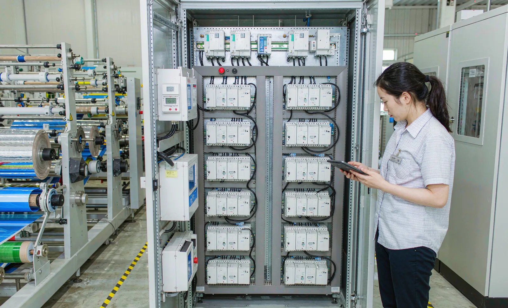
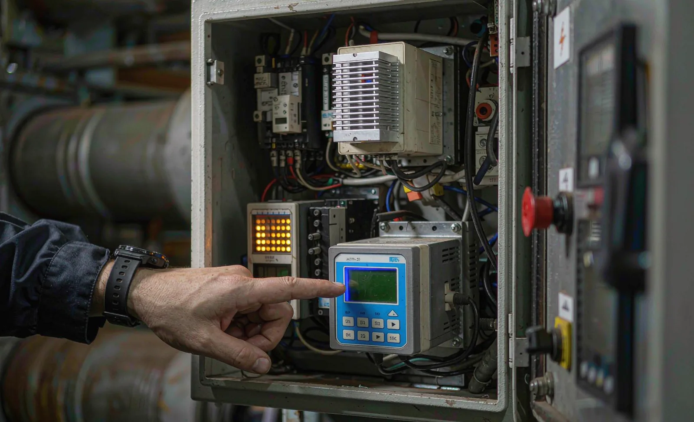

Published September 16, 2026 | By HDPTH Technical Editorial Team

Electricity is not the first thing buyers compare between slitter rewinder offers — speed, width and tension control come first — but energy compounds silently over a fifteen-year machine life. A line that draws 30 kW more than a competing design, running three shifts, can add tens of thousands of kilowatt-hours per year, plus demand charges and the compressor energy behind every pneumatic function. Efficiency is the sum of drive architecture, motor sizing, air design and whether the machine measures its own consumption.
Drive systems: architecture decides where energy goes
A slitter rewinder is one of the friendlier machines for regeneration. During deceleration, and during parts of the winding cycle, a driven rewind can return energy to the system — and what happens to that energy is decided by drive architecture:
- Common DC bus: multiple inverter modules share one DC link and one rectifier feed, so energy regenerated by one axis powers another instead of being dissipated in brake resistors. For multi-motor machines with frequent stops and high roll inertia, this is the architecture to require.
- Modern vector-controlled AC drives: standard today, but specify current-generation units with high part-load efficiency and low standby losses, and ask whether drives power down during long stops.
Specify motors at IE3 or IE4 efficiency class per IEC 60034-30-1, and make the difference visible: high-efficiency motors cost slightly more and pay back through reduced losses every running hour.
Motor sizing: right-sized beats oversized
Oversizing feels safe and costs money forever. Motors and drives are most efficient at 60–100% load; a motor selected at three times the real demand spends its life in the inefficient part-load region, with poor power factor as a bonus penalty. Require instead:
- A sizing calculation from the supplier for your material — web tension, line speed, roll weight and diameter range — not a generic frame size.
- Rated motor load points that sit in the efficient band at your typical recipe, with headroom for the maximum recipe.
- Transformer and drive sizes matched to actual demand, so you are not paying losses on capacity you never use.
Compressed air: the expensive invisible utility
Compressed air typically converts only 10–15% of input electricity into useful pneumatic energy — the least efficient utility on any plant floor. On a slitter rewinder it loads air shafts, nips and lay-on rolls and cleans the web, and it often leaks continuously whether the machine runs or not.
- Isolation valves that shut the machine’s air circuit at standstill and long stops.
- Leak-tested piping and fittings at delivery, per a stated test in the FAT protocol.
- Lowest workable pressure per function, declared in the offer — every bar you do not need saves compressor energy plant-wide.
- Declared air consumption per cycle for shaft loading, so your compressor capacity plan is based on data.
Energy per tonne: the only number to negotiate on
Together, drives, motors and air design produce the one figure a buyer should negotiate: kWh per tonne of processed material. Make it contractual:
| Requirement | How to specify | Where to verify |
|---|---|---|
| Submetering | Energy meter on the machine main supply, readable and exportable | Control-system design review; demonstrated at FAT |
| Test recipe | Agreed material, width, speed and tension for the measurement | Written into the acceptance protocol |
| Target value | kWh/tonne target for that recipe, with measurement method stated | FAT or SAT measurement against the target |
| Ongoing tracking | Energy logged with production data per shift | Post-installation, via the line data export |
A realistic machine-level figure for a converting slitter rewinder is a few kWh per tonne — for example, a 40 kW average draw producing 5 tonnes per hour gives about 8 kWh/tonne. Your absolute number depends on material and speed; what matters is that it is measured, agreed and tracked.

Specify energy with your next machine
Send HDPTH your material, roll weights and shift profile. We will provide the drive sizing, motor selection and declared air consumption for your project — plus a submetered kWh/tonne figure measured at acceptance.
Submit Your Project InquiryQuestions to put to every vendor
- Is the drive system a common DC bus, and can you quantify the regeneration benefit for our cycle profile?
- Which IEC 60034-30-1 efficiency class are the main motors?
- Show the motor and transformer sizing calculation for our material data — what is the margin and why?
- What is the declared compressed air consumption, pressure and standby behaviour?
- Is an energy submeter included, and will you accept a measured kWh/tonne target at FAT?
Comparing lines on lifetime cost?
Our guides on OEE and downtime data and remote diagnostics and IoT cover the other measurable dimensions of machine value, or send your requirement list directly.
Contact HDPTHFrequently asked questions
How much electricity does a slitter rewinder actually use?
A typical converting-line slitter rewinder draws between roughly 20 and 100 kW while running, depending on width, speed and tension levels, and a realistic machine-level target is in the range of a few kWh per tonne processed — for example, a 40 kW average draw producing 5 tonnes per hour gives about 8 kWh per tonne. The only number that matters for your business case, though, is your own measured energy per tonne on your materials, which is exactly why submetering should be part of the acceptance test.
Is a common DC bus drive system really more efficient?
On a slitter rewinder, yes, and for a mechanical reason: the rewind side frequently decelerates rolls and can generate energy while the unwind side is motoring. On a common DC bus, that regenerated power flows to other drives in the group instead of being burned in brake resistors. The saving is largest on machines with frequent stops and high roll inertia — turret winders with automatic roll transfer are the classic case. For single-drive or lightly loaded machines the benefit is smaller, so ask the supplier to quantify it for your cycle profile.
Are oversized motors a problem if they “just run cool”?
They are a hidden cost. Induction motors and their drives lose efficiency at low part load, power factor drops, and if the oversizing is done at the transformer or supply level, you pay standing losses and demand charges around the clock. Right-sizing means the motor reaches its efficient operating range at your typical tension and speed — not that it has a huge safety margin on the nameplate. A supplier willing to show the sizing calculation for your material data is showing you they engineered the line, not just assembled it.
Why does compressed air matter on a slitter rewinder?
Compressed air is the most expensive utility on the plant floor — it can take 7 to 10 times more electricity per unit of useful energy than direct electric drive. Slitter rewinders use air for shafts, pneumatically loaded nips, lay-on rolls and web cleaning, and consumption is continuous even when the machine idles. Specify leak-free air circuits, isolation valves that shut off air at standstill, and demand-side pressure requirements, because every bar of unnecessary pressure adds compressor energy across the whole plant.
How do I specify energy per tonne in a machine purchase?
Make it a measured acceptance figure, not a brochure claim. Require a submeter on the machine’s main incoming supply, agree the test recipe (material, width, speed, tension), and measure kWh per tonne at FAT or SAT under that recipe. State a target value in the specification with a defined measurement method, and log energy alongside production data so the figure can be tracked per shift afterwards. A supplier confident in their drive sizing and air design will accept this; resistance to measuring is itself a signal.
Sources
- IEC 60034-30-1: Rotating machines — efficiency classes IE1–IE4 for line-operated AC motors
- EU Regulation 2019/1781: ecodesign requirements for electric motors and variable speed drives
- ISO 50001: Energy management systems — the plant-level framework for energy per tonne tracking
- US DOE Advanced Manufacturing Office: motor system and compressed air efficiency resources